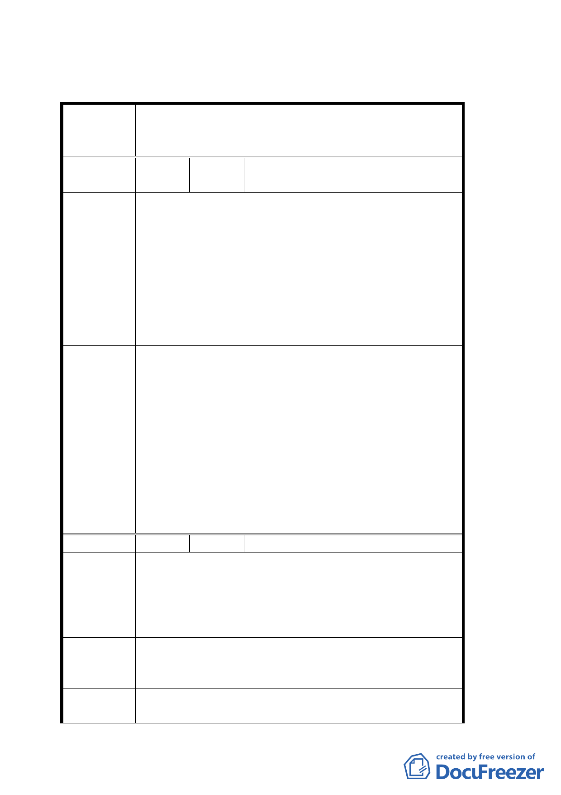

臺北市都市計畫委員會公民團體陳情意見綜理表
變更臺北市南港區國防部軍備局生產製造中心第
案 名 202 廠部分機關用地為保護區及住宅區主要計畫
案
編
號
１
陳情人
國防部軍備局生產製造中心第
202 廠
一、由臺北市政府 94 年 5 月 20 日府都規字第 0940586800
號公告變更「國防部軍備局生產製造中心第 202 廠
部分機關用地為保護區及住宅區」計畫書圖觀之：
位於 202 廠東側部分廠區內被劃入變更範圍。
陳 情 理 由 二、基於國防安全暨使用需求考量，202 廠廠界範圍內
仍應維持機關用地之設定。
三、由於公告計畫書圖內，均無標示土地地號，對確實
土地位置，易產生困惑，故建議公展時，一併公佈
變更範圍之土地地號。
一、變更「國防部軍備局生產製造中心第 202 廠部分機
關用地為保護區及住宅區」乙節，基於安全考量，
本廠同意以廠界為界線設定機關用地範圍，解除廠
建議辦法
界外機關用地設定。
二、建議修正 202 廠東側變更範圍以廠界外範圍（詳如
地形圖與地籍圖）。
三、建議日後公展時，除計畫圖外，一併公佈土地地號。
委
決
員
會
議
同意軍方所陳「於 202 廠東側及西側之部分變更範圍仍
應保留供軍方使用」維持原機關用地，不納入本次變更
範圍。
編 號 ２ 陳情人 許智龍
一、土地標示：南港區新光段二小段 449、450 地號。
二、該二筆土地為飛鵰營區部分，產權屬國防部軍備局，
陳情理由
為北部地區飛彈陣地，土地現況有一座高壓變電
所，提供全營區電力，無法任意遷移，為符合使用
需求，建請回復原使用分區為機關用地。
該二筆土地僅占規劃變更為住宅區範圍右上角一小部
建 議 辦 法 分，影響不大，但對營區戰略性而言，卻相當重要，建
請修正規劃圖，避開該二筆土地，以利國防任務遂行。
委
決
員
會
議
同編號 1。
三